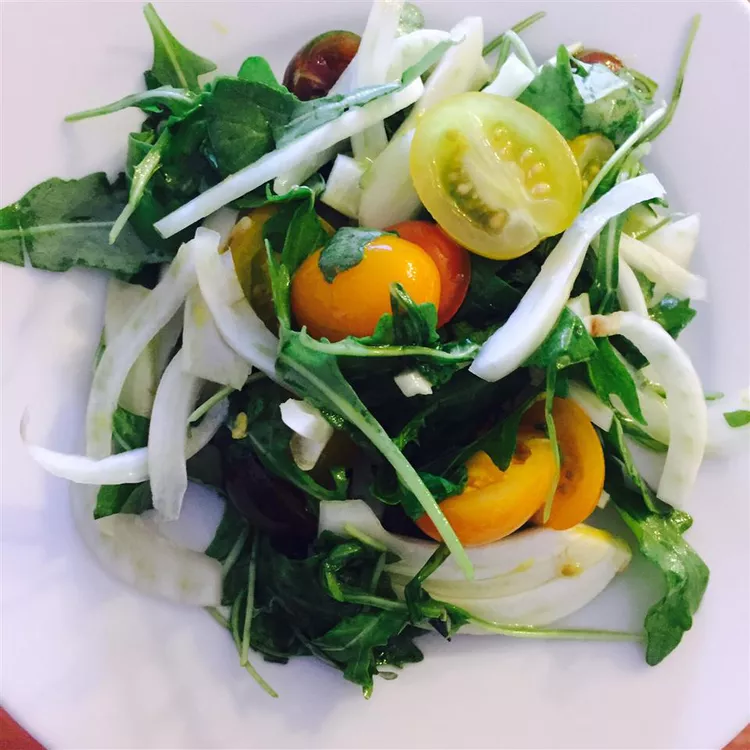

Arugula Fennel Salad

A quick light salad to get that itch.
A salad made with delicious fresh vegetables! A delectable salad, easily
thrown together, for a quick light taste of summer or fall.
It was found on AllRecipes.
Ingredients
Dressing:
- 1/3 cup extra-virgin olive oil
- 1/4 cup fresh lemon juice
- 1 teaspoon lemon zest
- 1/2 teaspoon salt
Salad:
- 6 cups arugula
- 2 small fennel bulbs, cored and thinly sliced
- 30 grape tomatoes, halved
- 1/2 cup freshly grated Parmesan cheese
- 1/2 cup toasted pine nuts
Steps
- Make the dressing: Whisik oil, lemon juice, lemon zest, and salt
together in a small bowl.
- Make the salad: Combine arugula, fennel, tomatoes, Parmesan,
and pine nuts in a large salad bowl. Drizzle dressing over the
top and toss to coat.